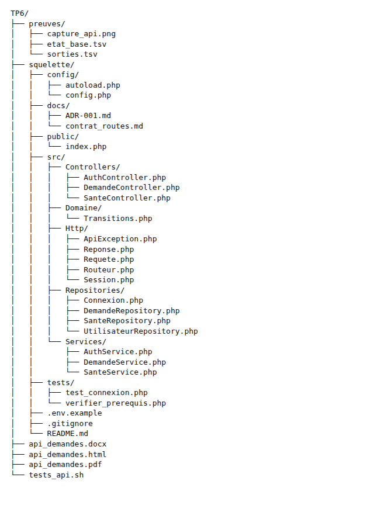

Squelette PHP 8 de l'application de gestion des stages : une route est implémentée (GET /api/sante), les trois autres routes du contrat sont déclarées et répondent 501. Le code est dans le dossier squelette/ du dépôt.
Une règle par couche : le contrôleur ne fait pas de métier, le service ne touche pas à SQL, seul le dépôt écrit des requêtes.
| Couche | Fichier | Rôle |
|---|---|---|
| Contrôleur | src/Controllers/SanteController.php | Lit la requête, appelle le service, écrit la réponse. Aucune règle métier. |
| Service | src/Services/SanteService.php | Règle métier : l'application est disponible si la base répond. Capture l'erreur technique et la journalise. |
| Dépôt | src/Repositories/SanteRepository.php | Seule couche qui exécute du SQL (requête préparée SELECT 1). |
| Connexion | src/Repositories/Connexion.php | Création de la connexion PDO : exceptions activées, émulation désactivée, délai de 3 s. |
| Routage et réponses | src/Http/Routeur.php, Reponse.php | Table des routes du contrat, codes 404, 405, 501 et réponses JSON. |
| Point d'entrée | public/index.php | Unique fichier exposé. Assemble les couches et déclare les routes. |

| Élément | Rôle |
|---|---|
| public/ | Point d'entrée index.php, seul dossier exposé au web |
| src/Controllers, Services, Repositories, Http/ | Les couches du tableau ci-dessus |
| config/ | config.php (lit .env ou l'environnement), autoload.php |
| tests/ | test_connexion.php : ouvre la connexion et exécute SELECT 1 |
| docs/ | contrat_routes.md et ADR-001.md |
| .env.example | Valeurs factices, à copier en .env |
| .gitignore | Exclut .env, .env.local, vendor/, journaux |
| README.md | Prérequis, installation, lancement, test |
Écrit avant le code et partagé entre backend et frontend. Le détail de chaque route est dans squelette/docs/contrat_routes.md.
| Méthode | Chemin | Rôle | Corps | Succès | Erreurs | Statut |
|---|---|---|---|---|---|---|
| GET | /api/sante | Public | — | 200 | 500 | Implémentée |
| GET | /api/demandes | Responsable, secrétariat | — | 200 | 401, 403 | 501 |
| POST | /api/demandes | Étudiant | {"entrepriseId": 3} | 201 | 400, 401 | 501 |
| PATCH | /api/demandes/{id}/statut | Responsable | {"statut":"VALIDEE"} ou {"statut":"REFUSEE","motif":"…"} | 200 | 400, 403, 404, 409 | 501 |
Résultats obtenus en exécutant le squelette sous PHP 8.3 (pdo_mysql) contre MariaDB 11.8, avec le schéma du TP3 chargé. Les 11 fichiers PHP passent php -l sans erreur de syntaxe.
| Cas | Requête ou commande | Résultat | Corps ou sortie |
|---|---|---|---|
| Test de connexion, base active | tests/test_connexion.php | Code 0 | « OK : connexion PDO établie et requête SELECT 1 réussie. » |
| Test de connexion, base arrêtée | tests/test_connexion.php | Code 1 | Échec signalé sur la sortie d'erreur |
| Santé, base joignable | GET /api/sante | 200 | {"statut":"ok","base":"joignable"} |
| Santé, base arrêtée | GET /api/sante | 500 | {"statut":"indisponible","base":"injoignable"}. Le détail n'apparaît que dans le journal serveur. |
| Prérequis, conteneur sans Git | tests/verifier_prerequis.php | Code 1 | PHP 8.3, pdo et pdo_mysql : OK ; Git : MANQUE (absent de l'image PHP). Sur un poste avec Git, le script renvoie code 0. |
| Route au contrat | GET /api/demandes | 501 | « Route prévue au contrat, non encore implémentée. » |
| Route au contrat | POST /api/demandes | 501 | Idem |
| Route au contrat | PATCH /api/demandes/3/statut | 501 | Idem |
| Méthode non prévue | DELETE /api/demandes | 405 | « Méthode non autorisée pour cette ressource. » |
| Chemin inconnu | GET /route/inconnue | 404 | « Ressource introuvable. » |
Le coupage de la base a été simulé en arrêtant le conteneur MariaDB ; la route a répondu 500, puis 200 après redémarrage, sans relancer le serveur PHP.
Le squelette sépare les couches (contrôleur, service, dépôt) pour que la règle métier de disponibilité ne soit ni dans la route ni dans le SQL. La route de santé est testée contre une base active (200) et une base coupée (500), et le détail technique reste dans le journal. Les autres routes du contrat répondent 501 : elles sont prévues mais pas encore codées. Les commits correspondants seront ajoutés lors de la livraison.
Les identifiants vivent dans un fichier .env local, exclu par .gitignore : la vérification git check-ignore confirme que .env est ignoré. .env.example ne contient que des valeurs factices. Les variables d'environnement, si elles sont définies, remplacent celles du fichier.
1. Contexte : équipe de quatre étudiants, 25 heures, déploiement local sur postes Windows, données fictives uniquement.
2. Décision : monolithe modulaire en PHP 8, accès à la base par PDO (requêtes préparées, exceptions), sans framework.
3. Conséquences : démarrage rapide et peu de dépendances ; le routage, la validation et la gestion d'erreurs sont écrits à la main, donc doivent être testés.
4. Alternative écartée : mysqli, deux API selon le style, moins uniforme ; PDO fonctionne à l'identique sur MySQL et MariaDB.
5. Statut : accepté. La route /api/sante répond 500 quand la base est injoignable, comme le prévoit le cours (§6.5) ; le corps {"statut":"indisponible"} distingue la panne d'une réponse saine.